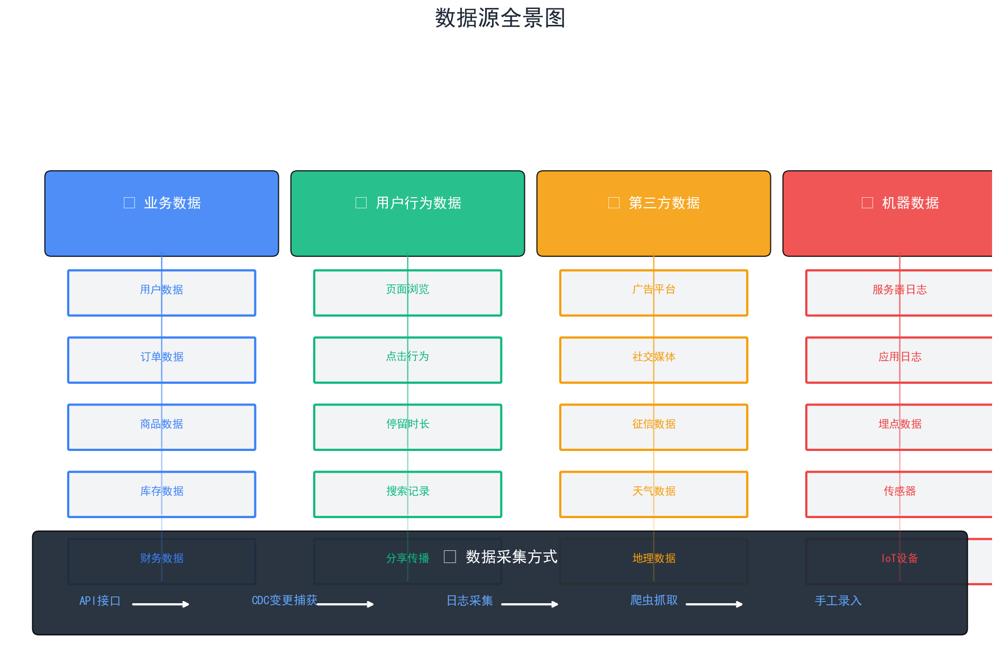
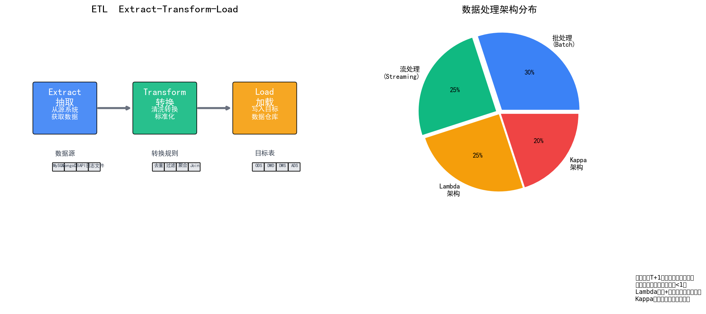
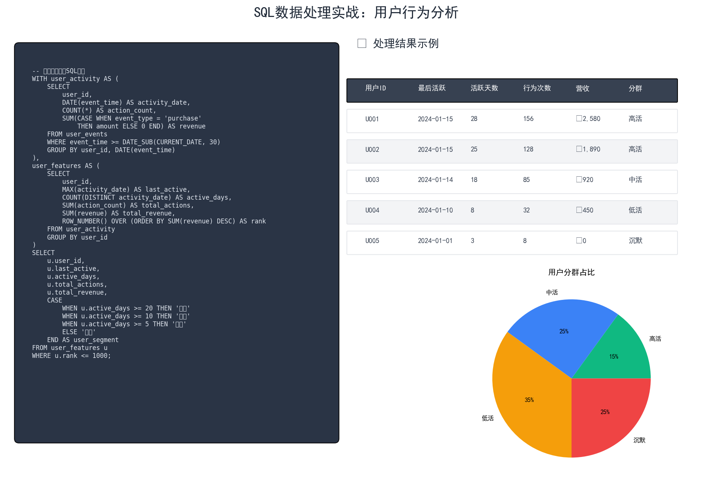
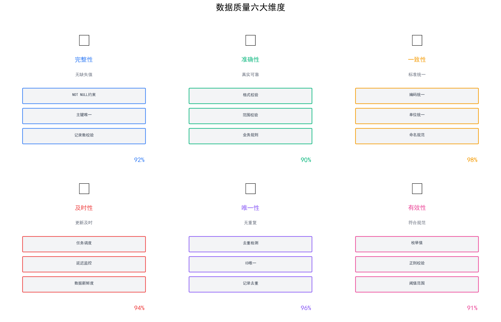
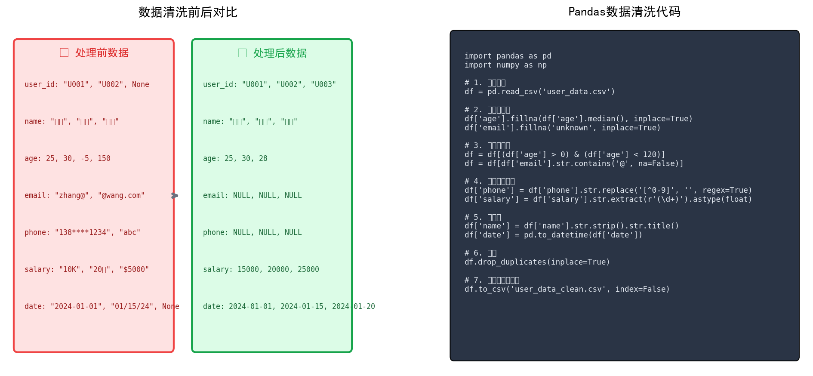
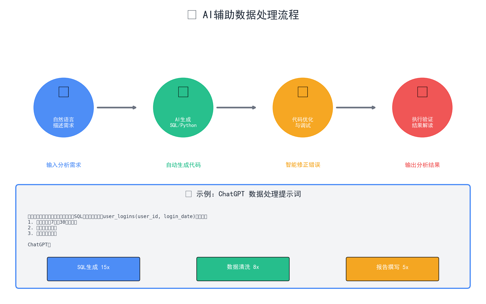

数据质量决定分析价值，重视数据清洗和质量监控。
用户/订单/商品/库存/财务
浏览/点击/时长/搜索/分享
广告/社交/征信/天气/地理
日志/埋点/传感器/IoT

user_id/手机号/注册时间/来源渠道
order_id/用户ID/金额/状态/时间
product_id/品类/价格/库存
流水/收入/支出/毛利
PV/UV/停留时长/跳出率
点击率/热力图/按钮曝光
关键词/无结果率/结果点击
分享数/回流数/K因子
统一埋点规范，建立事件模型
实时性好，需要开发对接，支持增量同步
实时同步数据库变更，捕获Insert/Update/Delete
Flume/Kafka日志收集，支持海量数据
外部数据获取，需要遵守robots协议
线下数据补充，人工录入系统
从MySQL/MongoDB/API/文件抽取原始数据
清洗/去重/聚合/Join/计算
写入ODS/DWD/DWS/ADS层

原始数据，与源表1:1映射，保留历史
标准化的业务过程，一致性维度
主题宽表设计，按业务主题汇总
直接服务BI/报表/数据产品
T+1定时任务，适合报表统计
工具：Hive/Spark/MapReduce
实时计算，延迟<1秒
工具：Flink/Kafka Streams/Spark Streaming
批+流混合，兼顾准确性和实时性
纯流处理，统一架构，简化系统

WITH...AS结构，代码更清晰
ROW_NUMBER()/RANK()/SUM()OVER()
SUM(CASE WHEN...THEN...ELSE...END)
DATEDIFF/ DATE_SUB / CURRENT_DATE
使用ChatGPT生成SQL代码
无缺失值、主键唯一、记录数校验
格式校验、范围校验、业务规则
编码统一、单位统一、命名规范
任务调度、延迟监控、新鲜度

Great Expectations / dbt tests
None/"NULL"/空字符串混用
负数年龄/超大金额/不可能的日期
手机号有字母/邮箱缺@
完全重复/部分重复

用中文描述你想做什么
自动生成可执行代码
智能修正语法和逻辑错误
运行代码，解读分析结果

"帮我分析用户留存情况，需要SQL代码。
数据表：user_logins(user_id, login_date)
要求：计算次日、7日、30日留存率"
"用Python清洗用户数据表，
处理缺失值、异常值、去重，
并保存为新文件"
"用Python画用户留存曲线图，
X轴是日期，Y轴是留存率"
自动扫描数据分布、发现质量问题
配置校验规则、自动告警
定期生成数据质量报告
记录问题、根因分析、改进跟踪
使用SQL/Pandas清洗一个实际数据集
使用ChatGPT生成SQL代码并执行验证
如何建立数据质量监控体系？